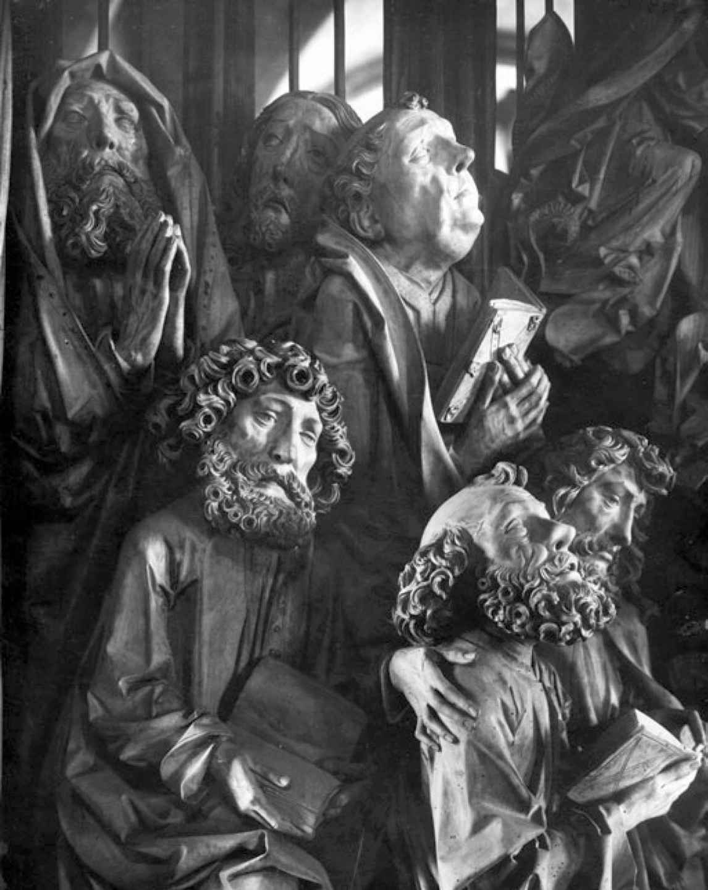
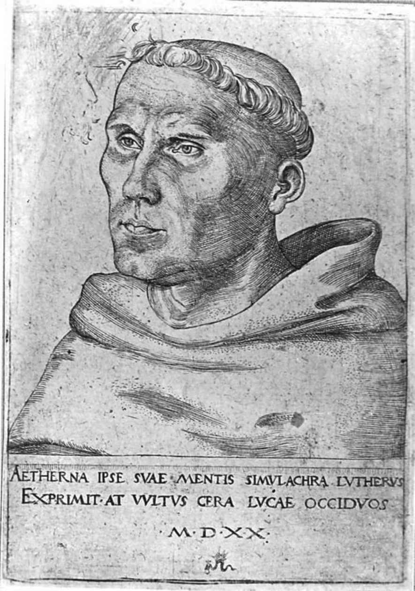

从13世纪中叶起，社会和政治的紧张局势正变得明显，是时候确定现代德国的文化了。神圣罗马帝国皇帝权威的下降适逢欧洲的人口爆炸和经济腾飞。尽管瘟疫和日益恶化的气候中止了14世纪后期领土的扩张，但那时德国已经拥有了几个主要的中心城市，特别是科隆、奥格斯堡和后来的纽伦堡，约有5万居民，堪比当时的伦敦。1200年左右，现代商业和银行系统在意大利诞生，德国的城市很快加入，同时产生了新的政治和文化态度。在经历了与德国各地小统治者的长久斗争之后，皇帝把那些城市从诸侯的手中解放出来，和意大利的城邦一样，在其中推行寡头政治，而非任何现代意义上的民主制。但是它们通过选举委员会实现了自治，一旦同业公会代表本行业赢得与商人和银行家并肩的地位，政治和经济生活就紧密地结合在了一起。军事和封建的价值观（如服从和荣誉）被从经济过程中衍生出来的价值观（如生产力和享受）以及对物质世界的精神意义的兴趣所遮蔽。首先，经济关系货币化（用现金支付租金的方式代替了以实物偿付封地税收和其他缴纳的方式）的过程在城市地区到13世纪末基本完成，从根本上动摇了个人身份的概念。随着生产和消费之间实际的联系被打破，个人，尤其是那些没有参与工作的经济过程也没有获得重要政治身份的人，可以主要把自己设想为—至少是潜在的—消费和享受的中心，这样一种态度，可以从严格意义上被称为“资产阶级式的”。因此，女性，特别是那些来自富有家庭以及在笃信宗教的环境中成长的女性，率先给予自我的新意义以文学的表达。神秘主义作家，从梅希特希尔德·冯·马格德堡（约1210—1283）到伟大的多明我会神学家、修女的精神导师埃克哈特大师（约1260—1327），找到了新的语言和文学来描述灵魂与上帝同在的生活中无限、永恒、不劳而获的快乐：埃克哈特创造了德语中最重要的一些抽象词汇，其中包括“教化”。随着识字的人越来越多，个人身份这一新概念通过单独而安静的阅读实践得到了强化，封建的骑士文学迅速过时。在神秘主义兴盛之后，骑士文学的主题仅仅作为滑稽剧、自觉的复兴运动或精神寓言的素材而留存下来。在虔信宗教的地区以外，紧密联合的城市社区大部分的文学作品都是集体创作或匿名的产物：情歌、酒歌、叙事谣曲（后来被一股脑儿地归为“民歌”，其中一部分至今仍为人传唱），礼拜仪式剧和圣经剧，文学协会中“工匠诗人”［其中最著名的是汉斯·萨克斯（1494—1576）］严守创作规范的作品。这些作品的叙事，无论是以诗行还是以散文的形式，常常是粗俗、诙谐或淫秽的，带着讽刺的目的。无赖蒂尔·奥伊伦斯皮格尔的恶作剧故事集和低地德语动物叙事诗《列那狐》在欧洲广泛流传。源于意大利城市中心和低地国家视觉艺术的新潮流传入了德国，在15世纪的德国土壤中成长起来的两位跻身世界一流行列的艺术家身上有集中体现：雕塑家蒂尔曼·里门施奈德（约1460—1531），以及阿尔布雷希特·丢勒（1471—1528）。

图3 蒂尔曼·里门施奈德，克雷格林根市上主教堂中圣母祭坛边的使徒们，以及15世纪的一些市民（里门施奈德的主顾）的脸
塞巴斯蒂安·布兰特（1457—1521）的《愚人船》（1494）由丢勒配图，是印刷时代德国的第一本畅销书。约翰·古腾堡于1445年左右在美因茨建造的印刷机是中世纪的德国小镇对世界文化做出的最突出贡献，但之后不到一百年，另一种几乎同等重要的印刷机诞生了。
中世纪德国城市生活的两个主要文化倾向，即神秘主义和现实主义的倾向，集中在马丁·路德（1483—1546）身上，他是矿工的儿子，起先被培养成律师，后来成为奥古斯丁派的行乞修道士和维滕贝格新大学的神学教授。
路德的教导，即上帝把天堂的奖励作为免费的礼物赐予信徒以回应他们的信仰，把神秘主义者将个人身份从工作中分离出来的做法发挥到了极致。他反对教皇出售“赎罪券”（用于赦免由罪过引起的现世惩罚）的《九十五条论纲》（1517）是对一种（迄今仍广泛流传的）未必确实的信念的热情辩护：灵魂独立于经济过程。同时，和同时代的拉伯雷一样，路德肆无忌惮地说出了对物质的欲望，城镇的发展正是为了满足人们的物欲。他坚决拒绝贫穷、禁欲和对教会权威的顺从（早年他曾宣誓要固守），这在通俗文学生硬、朴实和讽刺的风格中得以表现。他生活在被货币化强行分开同时被天主教会努力（但并未尽全力）团结在一起的两个世界里，并生活得同等深入。路德重新强调了奥古斯丁派对尘世和天国的区分，这是精神和物质的现代二元论的真正源泉，通常人们把它归功于笛卡尔。他强硬但分裂的人格在他所有的作品中都留下了印记，包括他写的小册子、布道、教义问答、一些影响深远的赞美诗以及他翻译的《圣经》（1522—1534），最后这项工作使他成为现代德语的创始人之一。

图4 1520年的奥古斯丁派修士路德，老卢卡斯·克拉纳赫（1472—1553）作
在路德之前也曾出现过改革者，路德体现了某些城镇的文化，假如他仅仅依赖那些城镇的保护，就很可能像扬·胡斯 [7] 一样被烧死在火刑柱上了。路德从教皇对他的责难中幸存下来，后来又躲过了1521年在沃尔姆斯召开的帝国议会上由帝国裁定的罪名，这是因为他的教义被德国的一些诸侯接受了。当路德勇敢地鄙视哈布斯堡皇帝查理五世的权威时，帝国的诸侯十分乐意做路德的后盾：路德不仅将宗教事务上的最终管辖权从罗马转移到了当地统治者手里（最初只打算作为临时性的规则），将教会财产间接地转移给国家，而且在诸侯与城镇的长久交战中为诸侯创造了更隐秘、意义更深远的优势。因为正如在新的路德虔信教义中所表达的，如果诸侯能把自己塑造成现代城市和商业意识中个人身份的保护者，那么城镇就可以摆脱对原先赋予它们权力的帝国的依赖，最终与它们的地方领主一起找到归宿。支持这些强大的力量是一场危险的游戏。和路德宗的信徒不同，加尔文派和再洗礼派教徒相信他们有权抵抗罪恶的世俗权威。各种政治和宗教利益之间的流血斗争一直持续到1555年《奥格斯堡宗教和约》 [8] 的签订。路德曾拒绝在沃尔姆斯的帝国议会上让步，却在奥格斯堡表现得更为合作。《奥格斯堡宗教和约》构成了接下来250年里德国根本大法的基础：帝国由于承认各种教派的存在，被进一步削弱；诸侯王则因为有权决定自己领地的宗教信仰而进一步增强了力量；新的基督徒个人的自由受到限制，只有权移居到自己所属教派的领地。
宗教改革的完整历史（出于个人灵魂及其满足而与过去决裂）在一部描写天才的匿名作品中被赋予了象征性的甚至是神秘主义的形式，这部作品是为新的印刷技术创造出来的新市场而写的：1587年在法兰克福出版的《约翰·浮士德博士的故事》。历史上有过一个真实的浮士德博士，他是一个不成功的占星师和炼金术士，1540年左右他以神秘的、非自然的方式结束了自己的一生。这本书通常被称为法兰克福的“民间故事书”，它的创意首先在于把自己表现为一则新闻—语源学意义上的“小说”，一则关于本时代并为本时代而写的故事，尽管表面上有着相似的结构，但它不是对传统故事的复述，也不是搜罗滑稽片段的传统故事集。小说的主角，或者说反面人物，把16世纪对传统的拒绝推向了极致：他摒弃固有的魔法学习，把自己的灵魂出卖给宗教的敌人，换得24年的快乐，复活了特洛伊的海伦，使之成为自己的情妇。（由于文学命运的牵引，旅行的英国演员很快给德国带来了关于浮士德博士一生的戏剧版本，这是克里斯托弗·马洛在原版民间故事书或其英译本的基础上写成的。该剧本逐渐普及，业余爱好者贡献了越来越多难以认出原型的改写本和木偶剧脚本，把这个故事扩散到所有不善读写的德语地区。）对个人主义可能的终极含义的深刻焦虑是路德反叛的基础，同时也预示了叙述浮士德放荡行为时的紧张快感和结尾处对说教的回归（在魔鬼索取到他想要的东西之后，回到正统的路德教会生活的集体安全感中）。正如路德宗在政治上妥协，服从国家权威，为的是作为个人救赎的手段存续下来，它也在精神上妥协，出于对自己革命性的甚或是自毁性的潜能的畏惧，给自己强加了和罗马一样严格的等级制度和公式化的教条主义。曾经孕育改革的城镇无论在商业还是在宗教上已经失去了对创新的兴趣。相反，路德宗获得了神秘主义者、怪人，最终还有虔敬派教徒的平行历史，他们在既有制度以外发展自己独创的灵感。其中许多人借鉴了雅各布·伯麦（1575—1624）的作品。伯麦是来自格尔利茨的一个自学成才的鞋匠，曾试图通过使用和埃克哈特大师一样富有创造性和新逻辑的、部分源于炼金术的语言，假设积极与消极原则之间的关系，来统一神学和自然哲学。他以“波墨”这个名字在英国出了名，影响深远，他的读者竟还包括牛顿和布莱克。
三十年战争的大劫难过后，诸侯的权力终于成为德国政治和文化在新时代发展的显著特征，并得到加强和巩固。1648年签订的《威斯特法伦和约》只不过是一个世纪之前的《奥格斯堡宗教和约》的世俗延伸：专制主义及其文化的时刻来临了。在德国，甚至路德宗教徒和接受改革的君主也明确表现出了抑制新教城市独立精神的兴趣。这些深刻变化在文学中引起了反响，其中的西里西亚（现在的波兰南部）文学扮演了一个重要角色。1620年的白山战役 [9] 之后，胜利的哈布斯堡家族在自己领地内的行动更像诸侯而非皇帝，它重申了中央的权威，并大力推行再天主教化的政策。西里西亚说德语的资产阶级成员绝大多数信奉新教，他们因此发现自己处在本时代对立力量之间的断层线上，既在宗教领域也在政治领域介于天主教徒和新教徒之间，处于城市生活的过去和专制主义的未来之间，他们率先指出了德国文学在接下来的三个世纪将要走的道路。马丁·奥皮茨（1597—1639），一个没多少个人信仰的人，在公共场合调侃了皈依天主教的可能性。他生为屠夫的儿子，后来成为一位卓越的外交家，为多位诸侯服务，并把自己的著作献给他们。他通常被视为一位改革家，他使德国现代文学成为可能。凭借关于德国诗学的作品《德国诗学之书》（1624），他确定了德语诗律以重音为基础，而非音节的数量或长度；他把法国亚历山大体确立为标准的德语诗歌韵律，并制定了押韵的规则和颂歌及十四行诗的形式。但是他的真正成就在于使文学适应了新的政治现实。他写道：“因为这是诗人可以期盼的最大回报，他们在国王和诸侯那里找到了一席之地。”他的正规化方案使德语诗歌获得了作为宫廷艺术的新声望。他的追随者中有另一位西里西亚诗人安德烈亚斯·格吕菲乌斯（1616—1664），他创作出了几部悲剧和几首最优秀的德国十四行诗。在这两种体裁里，格吕菲乌斯都在强烈的激情和奥皮茨的形式约束中表现了路德宗矛盾的忠诚问题—仿佛那些曾给予德国物质财富和路德宗良知的城镇力量正在缓慢而有力地拒绝对诸侯王权威的服从。
然而，17世纪最伟大的德国作家们无暇理会任何人的规则。约翰（“汉斯”）·雅各布·克里斯托弗尔·冯·格里美豪森（1621或1622—1676）并非来自西里西亚，而是来自法兰克福附近的格尔恩豪森。在他12岁那年，他信奉新教的家乡遭到抢掠和焚烧，他当了兵。后来他改变忠节和信仰，战争结束后在一个帝国军团里做秘书，最后他定居在黑森林的一个村庄里，作为一名地产经纪人为斯特拉斯堡的主教工作，并以相当勉强的理由获得了一个贵族头衔。在他带有部分自传色彩的流浪汉小说《痴儿西木传》（1668，1671）中，我们终于听到了多年不曾听见的自由的、爱冒险的中间阶层的声音，他们坚信自己和别人一样知道生活的真相，尽管最终的命运不一定掌握在自己手中，它也不会在任何别的人手中，命运由自己来决定，全凭自己的能力掌控。恐怖又滑稽的战争、城市、农村和商业生活的场景，上层和下层人士的奸情，纯粹的超自然幻想，欧洲第一个荒岛沉船的故事，通过最后归隐的主人公的回顾性叙事，完成了一则关于人生起落和救赎的复杂的道德寓言。当时没有哪本别的德国好书能像《痴儿西木传》一样畅销百余年，格里美豪森接着又写了一系列相同背景下的类似故事。其中值得注意的有女流浪者兼随军商贩大胆妈妈的回忆录（“大胆”是她给自己赖以谋生的女性外生殖器起的名字），她没有孩子，性欲很强，她的战争、卖淫、兽行和欺骗的故事并没有受到痴儿西木的任何一种道德和宗教反思的影响。她的故事中断了，但并没有结束：格里美豪森是一个现实主义者，他知道，一个缺乏救赎的世界不能容忍他做出结论。
在战后时期的文学中，现实主义供不应求。在宫廷和学校之外，世俗文学是少数人的兴趣—1650年，它大约只占德国所有出版图书的5%，而流行的神学书目的数量是它的四倍。印刷文学的生产量由市场决定，它是文化表达的一种形式，起源于资产阶级，本质上是商业化的，被牢牢掌握在国家机构、教会和大学的手中。虽然这些数字在接下来的90年里几乎没有变化，但在1680年左右可以感觉到某种气氛上的变动。1681年，以德语出版的书籍数量第一次超过了拉丁语的。17世纪70年代，随着第一批虔敬派教育和慈善机构在法兰克福和哈雷的建立，路德宗开始在神职人员和大学以外的世界执行复兴的使命。路德宗起初对内心生活的关注被重新发现，一种曾经为神秘主义所独有的资源被重新导向了更普及的渠道。中产阶级开始将他们的灵魂定义为一个自由的地方，并接受他们在一个更为庞大的规划中所扮演的从属但有效的角色。这种新的态度在德国当时的一位杰出的智力天才戈特弗里德·威廉·莱布尼茨（1646—1716）的哲学中得到了完美而深刻的表达，对他来说，宇宙是一个完全理性的系统，虽然它的理性只对那些较高的阶层显现，比如君主，并且最终只对上帝显现。但是，建构起这个系统的每一个单位都是一个独立的个体（“单子”），它不受外部事件的影响，着眼整体，这个整体尽管有限，却以自己的方式达到了完美，是神的智慧的独特表达。“认清你的位置”是莱布尼茨的形而上学和伦理学的简要概括，很符合专制时代大多数德国作家和思想家的立场。